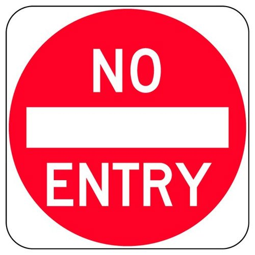

|
This sign is used on roadways where traffic is required to stop before entering a major road. The vehicle shall proceed past the stop line only after ascertaining that ths will not cause any damage to traffic on the main road. |
 |
This sign is used to assign right-of-way to traffic on certain roadways and intersections, the intention being that the vehicles controlled by the sign must give way to the other traffic having the right-of-way. |
|  |
These signs are located at places where the vehicles are not allowed to enter. It is generally erected at the end of one-way-road to prohibit traffic entering the roadway in the wrong direction and also at each intersection along the one-way road. |
|
This sign is used on stretches of the road where sounding of horn is not allowed, near hospitals and in silence zones. |
|
This sign is used at places where vehicles are forbidden to make a turn to the reverse direction of travel between the sign and the next inter-section beyond it. |
 |
This sign is erected at the beginning of such sections of highways where sight distance is restricted and overtaking will be dangerous. |